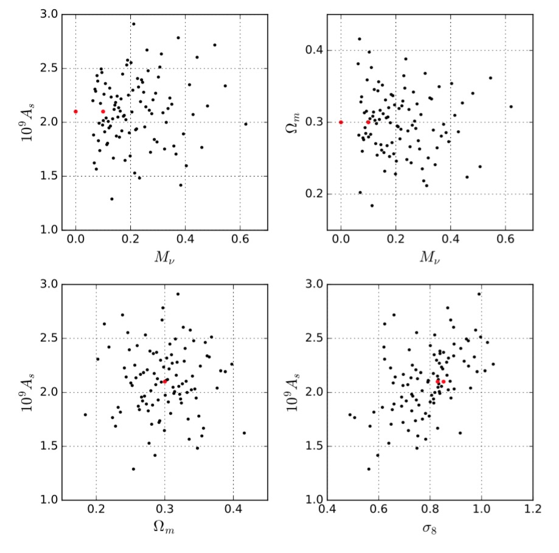

DOWNLOAD
data
Please contact Jia Liu (jialiu@berkeley.edu) for technical issues.
DESCRIPTION (simulation paper:
arxiv:1711.10524):
MassiveNuS (Cosmological Massive Neutrino Simulations) include 100 massive neutrino models + 1 massless model with three varying parameters (
parameter file):
(1) neutrino mass sum M_nu (ranging from 0 to 0.6 eV, assuming normal hierarchy)
(2) matter density Omega_m
(3) primordial power spectrum amplitude A_s (sigma_8 is a derived parameter)

The simulations correctly capture the background expansion as neutrinos turn from relativistic to non-relativistic, as well as the growth of neutrino clustering in response to the nonlinear matter growth.
DATA PRODUCTS (
data)
(1) 67 snapshots:
For the two fiducial models (z=0 to z=45, every126 comoving Mpc/h)
Format: Gadget-2 format2, with position and velocity information.
Size: 2.2TB/model.
Code: Gadget-2 (1024^3 particles, 512 Mpc/h box size) + neutrino patch (
Ali-Haïmoud & Bird 2013)
(2) Halo catalogues:
For each of the 101 models.
Halos and properties, complete down to minimal halo mass 10^11.5 M_sun, around three million halos at z=0, for z=0 to z=45.
Format: ascii (recommend analysis tool:
Halotools)
Size: 16GB/model.
Code:
rockstar
(3) Merger trees:
For the two fiducial models.
Format: ascii (recommend analysis tool:
Halotools)
Size: 18GB/model. Code:
consistent tree
(4) Convergence maps (galaxy & CMB lensing):
10,000 realizations for each of the 101 models, for 6 source redshifts.
Source redshifts z_s = 0.5, 1, 1.5, 2, 2.5, 1100.
Map size: 12.25 deg^2, 512^2 pixels, 0.4 arcmin resolution.
Format: fits.
Size: 59GB/model (10,000 realizations x 6 redshifts).
Code:
LensTools
We thank New Mexico State University (USA) and Instituto de Astrofisica de Andalucia CSIC (Spain) for hosting the Skies & Universes site for cosmological simulation products.